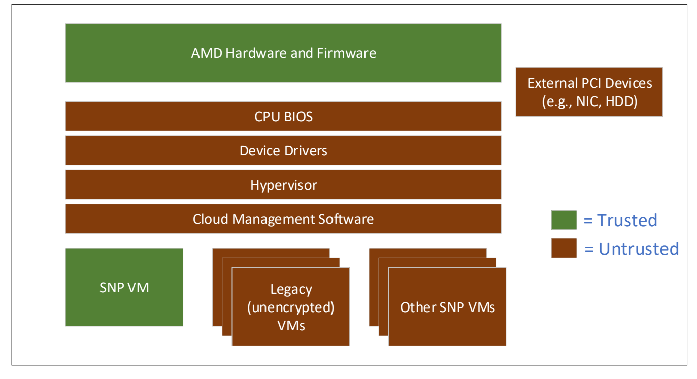
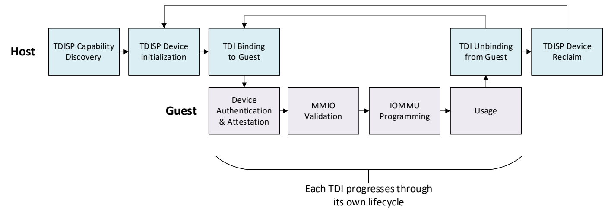

AMD SEV
From memory encryption to confidential VMs
Follow a VM through page validation, launch measurement, remote attestation, device assignment and migration.
Four steps from SEV to trusted I/O
SVM runs the virtual machine. The memory controller uses VM-specific encryption keys, while AMD Secure Processor (AMD-SP, also called ASP or PSP) manages key and guest lifecycle operations. SNP adds hardware checks to the host-controlled nested mapping.
| Technology | What it adds | Where to focus |
|---|---|---|
| SEV | Private guest memory uses a per-VM key. | ASID selects the guest key. The C-bit distinguishes encrypted guest mappings from shared mappings. |
| SEV-ES | Protects vCPU register state across VM exits in an encrypted VMSA. | The guest explicitly shares the operands the VMM needs through GHCB. |
| SEV-SNP | Adds the Reverse Map Table, page validation and a guest-requestable signed report. | The CPU checks ownership and mapping. The verifier evaluates the guest and platform TCB. |
| SEV-TIO | Extends SNP with trusted device assignment on supported platforms. | TDISP, SPDM, PCIe IDE and the IOMMU work together. |
SEV-SNP trust boundary

Follow a private page and a VM exit
The guest page tables translate GVA to GPA. The VMM-managed Nested Page Table (NPT) translates GPA to system physical address. The CPU checks the Reverse Map Table (RMP), indexed by system physical address, to enforce ownership, the expected GPA and relevant access rights.
RMP checks after address translation

Host assignment and guest validation

SEV-ES and SNP protect the Virtual Machine Save Area (VMSA). For an operation such as an intercepted CPUID that needs host emulation, a #VC handler puts only required fields in the shared Guest-Hypervisor Communication Block (GHCB), executes VMGEXIT, then validates the response.
VMPL0–3 are privilege levels inside a SNP guest, with VMPL0 most privileged. An optional Secure VM Service Module (SVSM) can run at VMPL0 and provide services such as vTPM to a guest OS at a lower privilege. RMP permissions apply alongside normal page-table checks.
From AMD-SP firmware to guest launch
Read platform firmware authentication, guest launch measurement and report certificate validation as three checks with different inputs.
SNP launch and measurement
| Trust layer | Evidence and meaning |
|---|---|
| Platform firmware | AMD-SP boot ROM anchors authentication of AMD firmware. AMD Platform Secure Boot can extend the host firmware chain to OEM BIOS. The SNP report exposes relevant TCB versions for verifier policy. AMD Secure Boot ↗ |
| Guest launch | MEASUREMENT is the SHA-384 launch digest of the measured initial image and page metadata. An optional signed ID Block can bind the expected digest and guest identity. The verifier checks the expected boot image and policy. |
| Guest OS and runtime | Guest UEFI Secure Boot can enforce signature policy for later boot stages. To verify later measurements, a deployment needs a separately specified measured boot and evidence binding design, such as a vTPM event log and Quote tied to the attested guest. |
| Report signer | The verifier uses the AMD Root Key (ARK) and the correct intermediate and endorsement certificate for VCEK or VLEK. Signature verification authenticates the report bytes. Deployment policy determines whether the evidence is acceptable. |
Request an SNP report and verify it off-host
The guest sends MSG_REPORT_REQ to AMD-SP using VMPCK-protected guest messages. The hypervisor transports the request. Firmware signs the report directly with VCEK or a provisioned VLEK, according to platform configuration.
Guest key binding and remote verification

| Check | What the verifier checks |
|---|---|
| Signer and certificate path | Read the signing-key indicator. For VCEK, validate ARK → ASK → VCEK and match the chip ID and reported TCB as required by the certificate profile. For VLEK, validate ARK → ASVK → VLEK and its TCB claims. Check revocation and verify the ECDSA P-384 report signature. |
| REPORT_DATA | Recompute the application-defined binding over a fresh verifier nonce and, when provisioning secrets, a guest ephemeral public key or channel transcript. The report field is 64 bytes. |
| MEASUREMENT / POLICY / VMPL | Compare the launch digest with the expected image. Check policy such as DEBUG and migration-agent allowance, the reporting VMPL and minimum accepted TCB versions. |
| HOST_DATA / REPORT_ID_MA | HOST_DATA is set by the host at launch and can be compared with an independently known value. For an agent-bound VM, REPORT_ID_MA identifies the MA instance. Evaluate that agent’s own evidence and policy where the deployment relies on it. |
Linux exposes /dev/sev-guest and SNP_GET_REPORT. An extended request can also return certificates supplied by the host. Treat those certificates as input and validate them to an independently trusted AMD root. Release secrets only after the channel key and evidence pass policy.
Assign a trusted PCIe function with SEV-TIO
Ordinary SNP devices use shared buffers for DMA. SEV-TIO extends the trust boundary to an accepted device interface and enables direct DMA to authorized private pages.
AMD SEV-TIO system architecture

| Mechanism | Responsibility |
|---|---|
| TDISP / TDI | PCI-SIG defines assignment and state for each TEE Device Interface, such as one SR-IOV VF. The endpoint Device Security Manager (DSM) enforces device-side rules. |
| SPDM / DOE | AMD-SP acts as the host TEE Security Manager (TSM). It uses a secure SPDM session with the DSM for identity, measurements and control messages. The VMM can relay the bytes through a PCIe DOE mailbox. |
| Selective IDE | Protects PCIe transaction traffic between configured endpoints, including confidentiality, integrity and replay protection for the selected stream. |
| AMD IOMMU / RMP | A Secure Device Table Entry (SDTE) and RMP checks restrict trusted DMA to authorized guest mappings. The guest validates the assigned MMIO ranges before using them. |
Device and TDI lifecycle

Read the TDISP CONFIG_UNLOCKED, CONFIG_LOCKED, RUN and ERROR states separately from guest acceptance of the TDI. For example, ABI 0.91 allows TIO_TDI_BIND to put the interface in RUN before the guest accepts it. The guest still validates MMIO with TIO_MSG_MMIO_VALIDATE_REQ and grants private DMA with TIO_MSG_SDTE_WRITE_REQ. AMD lists trusted I/O via TDISP for EPYC 9005 and lists TIO ABI revision 0.92 in its documentation index. Check the specific CPU, platform firmware, device firmware and host/guest driver stack.
Follow the migration agent and guest context
A Migration Agent (MA) can be a separate SNP VM associated with a guest at launch. Guest policy controls whether association is allowed. AMD-SP enforces which guest or MA can request export or import.
SNP migration with a migration agent
- In the host-assisted swap path, the source uses
SNP_PAGE_SWAP_OUTfor private pages and metadata. The Offline Encryption Key (OEK) protects those page images.MSG_EXPORT_REQobtains the guest context under the firmware’s export rules. - The migration solution authenticates the peer and transports the exported context over a protected channel. The destination creates a context, imports it with
MSG_IMPORT_REQand restores pages. The ABI also defines a guest-assisted path involving an Incoming Migration Image and an absorb request. - After migration, a relying party can request fresh evidence from the destination and recheck its TCB, identity and agent policy before resuming key delivery. Product support for live migration, vTPM and assigned devices depends on the actual stack and migration policy.
AMD SEV-SNP and Intel TDX side by side
Each Intel entry links to the corresponding chapter. The rows pair comparable responsibilities across the two architectures.
| Responsibility | AMD SEV-SNP | Intel TDX |
|---|---|---|
| Platform trust root | AMD-SP boot ROM, signed firmware and AMD TCB versions | SEAM Loader and measured TDX module in SEAM root ↗ |
| Private memory and page acceptance | ASID / C-bit, NPT + RMP, RMPUPDATE / PVALIDATE | KeyID, Secure EPT + PAMT, TDG.MEM.PAGE.ACCEPT ↗ |
| CPU state and guest/host interface | VMSA, #VC, GHCB / VMGEXIT | TDVPS, TDCALL / SEAMCALL, TDG.VP.VMCALL ↗ |
| Build measurement | SNP_LAUNCH_*, MEASUREMENT | TDH.MR.*, MRTD and guest runtime RTMRs ↗ |
| Evidence and signing chain | AMD-SP signs SNP report with VCEK or VLEK | TDREPORT → DCAP TDQE signs Quote; Intel PCK chain certifies the platform ↗ |
| Services in the trusted boundary | SVSM runs inside the VM at VMPL0. A migration agent can be a separate SNP VM. | Service TD is a separate TD bound to its target, for example MigTD. ↗ |
| Trusted device assignment | SEV-TIO, AMD-SP as TSM, AMD IOMMU + RMP | TDX Connect, TDX module as TSM, trusted VT-d ↗ |
| Migration | SNP MA and firmware context export/import, with platform-specific transport | MigTD evaluates policy and exchanges session keys. TDX modules export/import protected state. ↗ |
Read the specs and inspect a real SNP report
Start with the AMD architecture and the two Linux interfaces, then follow the certificate and trusted I/O references.
Try two checks on a supported SNP guest. Request a report with a fresh challenge and verify its signature and measurement. Then keep the report fixed and change the expected challenge to see the application binding fail while the report signature remains valid.